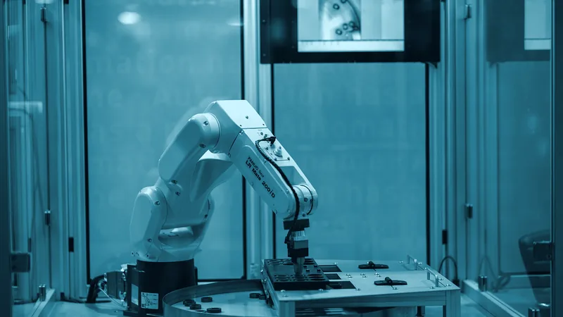
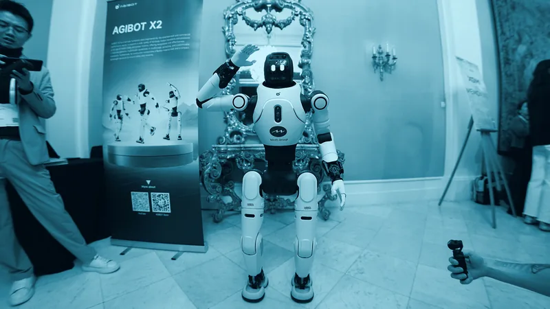
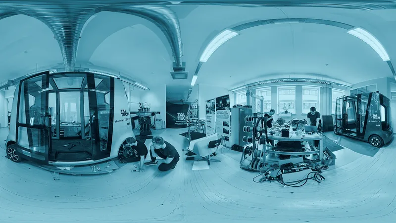
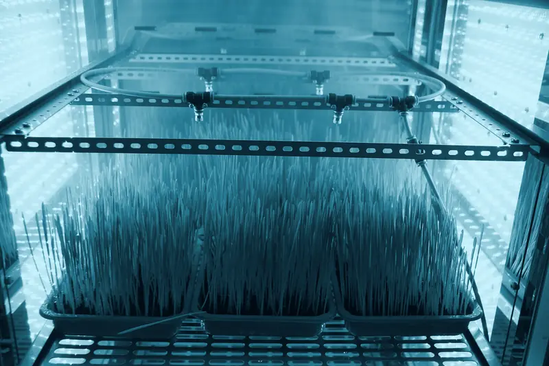

Machine Vision
Multi-camera perception, 3D reconstruction and defect detection at 120 fps on edge silicon.
- LiDAR + stereo fusion
- Depth estimation
- Defect & anomaly detection
AI · ROBOTICS · AUTONOMY — v4.0 ONLINE
Stackly builds autonomous machines and AI systems that perceive, decide and act — from edge inference on a single chip to fleets of machines running in the physical world.
CORE CAPABILITIES
Six in-house disciplines, one integrated stack. We own the full path from sensor fusion to end-effector control.
Multi-camera perception, 3D reconstruction and defect detection at 120 fps on edge silicon.

7-axis manipulators with dynamic collision avoidance and sub-millimetre repeatability.

Vision-language-action models that translate natural language into motor primitives.

GPS-denied SLAM with dynamic obstacle prediction across warehouses, farms and cities.

Photoreal digital replicas for line balancing, safety certification and virtual commissioning.

Mission control for hundreds of units — telemetry, OTA updates and predictive maintenance.
SOLUTIONS
Hover or tap a module to flip it and inspect the stack.
Adaptive robotic lines that re-tool in minutes, not weeks.
STACKLY / CELL-X
Autonomous movers that re-plan routes around people, pallets and traffic.
STACKLY / FLEET-OS
Solar autonomous tractors and selective weeders for 24/7 seasons.
STACKLY / AGRI-X
Superintuitive haptic guidance with sub-0.1 mm tool tracking.
STACKLY / MED-BOT
Autonomous inspection of turbines, pylons and pipelines in any weather.
STACKLY / SKY-SCAN
Robotic scientists that run experiments overnight and iterate by morning.
STACKLY / LAB-AI
TECHNOLOGY
Open, inspectable and portable. No black boxes between you and the machine.

PROCESS
Workshops, site audits and feasibility modelling. We quantify the value and the risk before writing a line of code.
Digital twin first, hardware second. A working demo in weeks — not a slide deck in quarters.
Modular hardware, versioned software, continuous integration and a simulation suite that runs on every commit.
On-site commissioning, operator training, safety certification and a hypercare window with our field engineers.
Fleet analytics feed the next model release. Your system compounds in capability every quarter.
SELECTED DEPLOYMENTS
A cross-section of recent programmes — measured on the shop floor, not in a demo reel.
GPS-denied SLAM movers commissioned across four warehouses in eleven weeks, live in under a quarter.
Seven-axis cells re-tasked between six product families with vision-guided part feeding.

Selective weeding and canopy scouting across 2,400 hectares, supervised from a single operations desk.
WHY STACKLY
Most integrators hand you a robot. We hand you a system that keeps performing after handover.
Mechanics, controls, perception and policy learning sit in one repo of people. No interface where requirements get lost.
Digital twin first, hardware second. You see your machine move before you commit to the floor space.
ROS 2, signed telemetry, documented models. Your engineers can read, fork and audit every layer we ship.
Hypercare, then a named field engineer, then predictive maintenance on the fleet you already own.
VOICES
“Stackly rebuilt our pick line in nine weeks. Throughput is up 42% and the changeover now takes four minutes instead of a shift.”
“Their digital twin let us validate the whole facility before we bought a single robot. That saved us seven figures.”
“The only robotics partner that treated our field data as seriously as their own models. Our yield is up 31% season over season.”
FAQ
Still unsure about something? Ask an engineer directly.
Discovery and feasibility take two to three weeks, then we build against a digital twin. Most programmes have a working cell on the floor inside nine to twelve weeks, and a full production deployment within a quarter.
Yes. We are fluent in ROS 2, PLC and SCADA integration, Warehouse Management Systems and MES layers. If the fleet already exists, we usually start by making it observable and remotely supportable, then add capability.
You do. Models, code, calibration data and cell designs are yours under contract, delivered in documented, portable form. We keep no exclusive lock-in and sign an NDA before the first workshop.
A two-week hypercare window, a named field engineer for your site, and remote telemetry on every unit we built. Predictive maintenance and model releases ship continuously — your system gets better without a second purchase.
Risk assessment, PL-d design, ISO 10218 and ISO/TS 15066 guarding, plus CE documentation are part of the deliverable. We work alongside your safety officer and produce the evidence pack for certification.
Discovery is a fixed fee. Build and deployment are milestone-based with a hardware and software quote attached, so you approve spend against a working result. Ongoing care is an optional annual plan rather than a requirement.
NEXT STEP
Send the brief, the bottleneck or the half-finished pilot. Within five working days you get a feasibility read, a rough path to production and an honest answer about whether we are the right team.
RESPONSE WITHIN 5 WORKING DAYS · NDA ON REQUEST